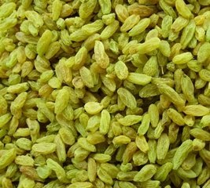

首 页 |
葡萄简介 |
葡萄酒 |
葡萄干 |
葡萄美食 |
|  |
葡萄干(英文名称:raisin)葡萄干是在日光下晒干或在阴影下晾干的葡萄的果实。又蒲桃。主产新疆、甘肃、山西、山东等地均有栽培。夏末秋初采收，鲜用或干燥备用。葡萄干肉软清甜，营养丰富。 根据选用葡萄种类的不同， 白葡萄干可以分为: 无核白、特级绿、王中王、 马奶子 、男人香、玫瑰香、 金皇后 、香 黑加仑 沙漠王、巧克力、酸奶子、梭梭葡萄干等。包括有籽、无 绿的、 红的、金黄的、 黑红、 紫的、黑的各种各样。根据口味不同有香甜、酸甜、特甜等各种口味。 (一)营养价值
(二)主要功效
5. 胃肠机能转好，消除便秘 |